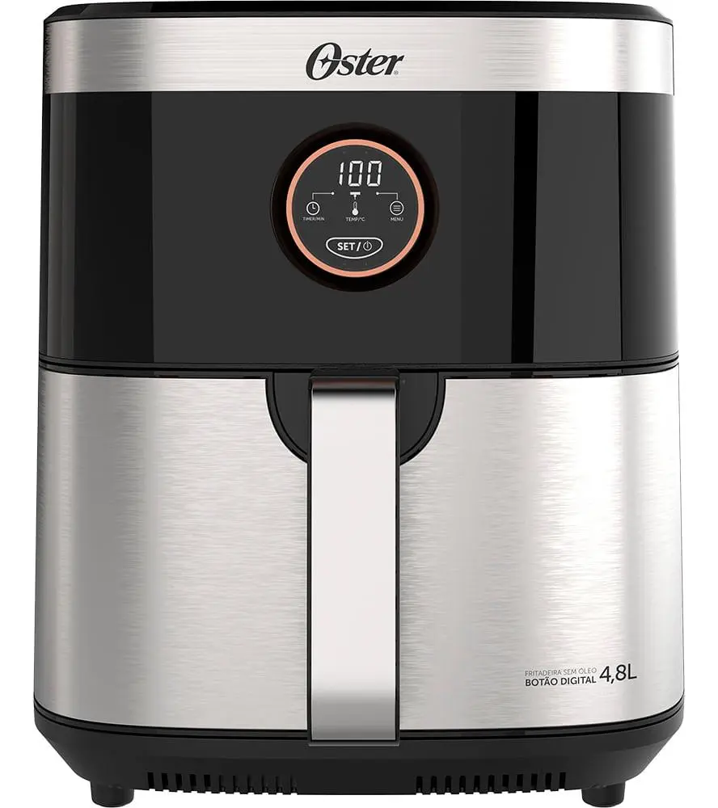
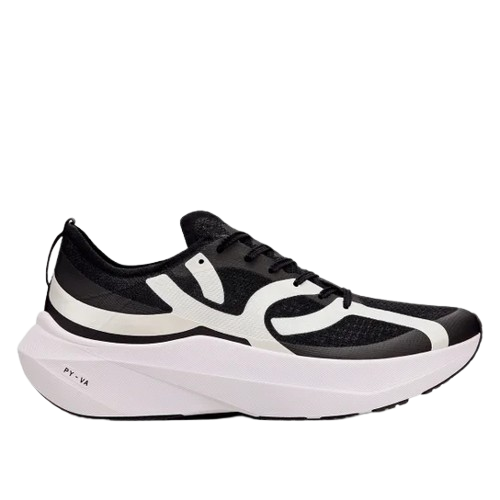
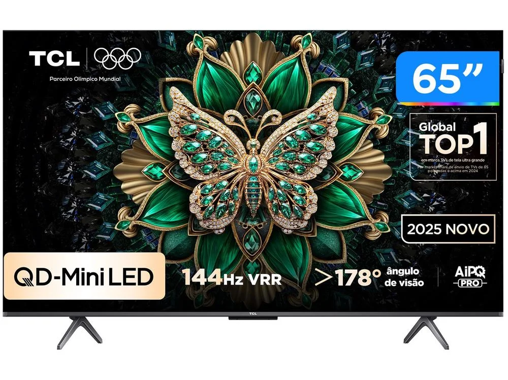

Usando os Pontos
Veja quanto os pontos valem numa troca e numa compra que acumula pontos.
O mesmo ponto pode valer pouco ou muito
Livelo e Esfera têm catálogo com produtos, como eletrodomésticos. Parece prático, mas cada troca dá um valor diferente para os seus pontos.
Para saber se a troca compensa, compare duas coisas: quanto os pontos custaram para você e quanto eles valem naquela troca.
Uma Air Fryer na Esfera
A Fritadeira Sem Óleo 2 em 1 Black Inox 4,8L (modelo OFRT660) aparece no catálogo da Esfera por 34.920 pontos, com o desconto do clube. Numa loja, ela custa R$ 299,90 em dinheiro. Suponha que cada 1.000 pontos custou R$ 35 para você.

por 1.000 pontos. Os 34.920 pontos custaram R$ 1.222,20.
por 1.000 pontos. (R$ 299,90 ÷ 34.920) × 1.000.
Você gastaria R$ 1.222,20 em pontos por um produto de R$ 299,90. Comprar em dinheiro sai mais barato.
Exemplo ilustrativo, com valores hipotéticos. Não é oferta vigente.
O mesmo tênis. O que muda é o caminho
O Tênis Corre 5 Olympikus custa quase o mesmo no caixa. Na compra direta, você não ganha os pontos desta oferta. Pelo link da Livelo, a compra rende pontos.

Preço pago e custo da compra. Sem os pontos desta oferta.
O tênis também saiu pelo mesmo valor: R$ 599,93. A oferta dá 10 pontos a cada R$ 1, então você ganhou cerca de 6.000 pontos, em torno de R$ 198. O preço real foi R$ 599,93 − R$ 198 = R$ 401,93.
A R$ 33 por 1.000 pontos Livelo, os cerca de 6.000 pontos valem em torno de R$ 198. Esse valor sai do que você pagou. No caixa, o preço continua R$ 599,93.
Exemplo ilustrativo, com valores hipotéticos. Não é oferta vigente.
E quando ganhar pontos custa mais?
A Smart TV 4K TCL QD-Mini LED de 65 polegadas custa mais no caixa pelo link da Esfera do que na compra direta. Essa compra rende pontos, e o custo efetivo pode ficar abaixo do preço direto.

Preço pago e custo da compra. Sem os pontos desta oferta.
Preço pago R$ 4.399,00. 5 pontos por R$ 1, 21.995 pontos. A R$ 35 por 1.000, esses pontos valem R$ 769,83. Custo efetivo: R$ 4.399,00 − R$ 769,83.
Os R$ 769,83 são uma estimativa do valor dos pontos para usar depois, a R$ 35 por 1.000 pontos Esfera. Pagar R$ 4.399,00 no caixa deixa o custo efetivo em R$ 3.629,17, abaixo dos R$ 4.179,05 da compra direta.
Exemplo ilustrativo, com valores hipotéticos. Não é oferta vigente.
Compare antes de trocar
- Veja o preço em dinheiro: procure o mesmo produto numa loja.
- Faça a conta: descubra quanto cada 1.000 pontos vale naquela troca.
- Compare com o seu custo: se o valor for menor que o que você pagou pelos pontos, a troca não compensa.
Trocas por produto costumam render pouco. Os pontos geralmente valem mais quando viram passagem, assunto dos próximos módulos.